At Psychic Reviews Online we test and rate readers, but sometimes you simply want to see what the cards say first. This six-card spread is free, private and runs entirely in your browser. Think about the situation you want clarity on, shuffle the deck, and let your hand choose six cards from the twenty-two Major Arcana. You will see a reading for every position, plus the full meaning of each card whenever you tap it.
M
Maren
Hi, I am Maren. Take a breath and think of a question, or simply stay open. When you are ready, press “Shuffle”.
It stays in your browser and is only shown back to you in the result.
For entertainment and self-reflection.
Using the six-card reading
Shuffle with a questionThink about the situation you want to look at and shuffle the deck. There is no right number of shuffles.
Select your cardsSix cards sit face down. Follow your instinct, tap your choices, and swap one by tapping it a second time.
Read it backEach flipped card appears with a short interpretation for its position. Tap a card whenever you want the longer meaning.
The six positions
How you see yourself now. The picture of yourself you are carrying into this question.
What you truly want. The wish beneath the practical goals.
What you fear. The worry that quietly shapes your choices.
What works in your favour. A strength or support you can lean on.
What stands in your way. The obstacle, whether outside you or inside.
Where this is heading. The direction of travel if you carry on as you are.
What each Major Arcana card tends to mean
When people write about readings online, the same cards come up again and again. These short notes explain how each of the 22 trumps is usually understood, so the vocabulary in any review or reading feels familiar.
Reviewers often describe a first reading as a leap, and The Fool captures that feeling. It stands for openness to the unfamiliar, a willingness to begin before feeling ready. The catch is carelessness, so a little preparation keeps the optimism well grounded.
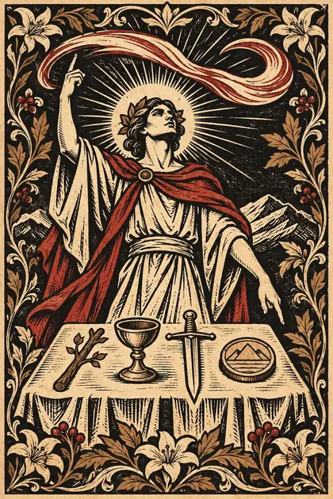
The Magician
Focused will · Skill and resourcefulness · Manifestation · Clear intention
The Magician is the card most associated with taking charge. It suggests you already possess the means to do something and need only commit your attention. Read it as a nudge to act with intent, instead of hoping the right moment announces itself.
A reader might call this the card of the unspoken. The High Priestess hints that important information sits just beneath the surface, and that listening matters more than talking. Give your intuition room, and resist demanding answers before they are ready.
Warm and generous, The Empress points toward nourishment and creative growth. It can describe a project coming along nicely or a need to look after yourself properly. The lesson is patience: things flourish when given care, comfort and time.
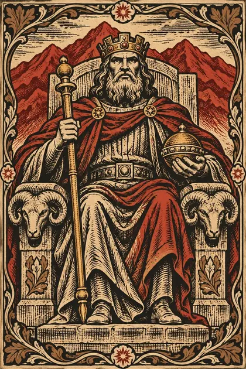
The Emperor
Structure · Authority · Stability · Leadership
The Emperor describes order, leadership and dependable boundaries. Many readers see it as a call to organise something that has been drifting. It can also question whether you have become too controlling, so ask which structure helps and which merely confines.
This card speaks for tradition, teachers and shared beliefs. When it turns up, a reader may ask whether an established path could support you, or whether you are following custom out of habit. Both answers are useful, and neither is automatically correct.
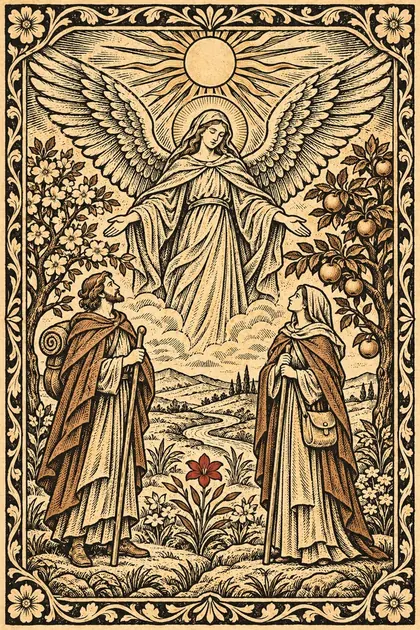
The Lovers
Choice and alignment · Deep connection · Shared values · Union
Many people expect romance here, but The Lovers is chiefly about choosing in line with your values. Relationships certainly feature, yet the card applies to any decision where honesty and genuine connection matter more than convenience.
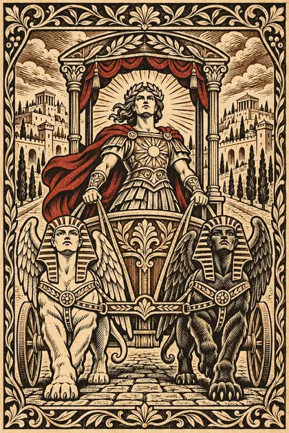
The Chariot
Determination · Self-mastery · Forward momentum · Victory through effort
The Chariot shows a person advancing by sheer determination, steering two pulls toward a single destination. Readers tend to interpret it as progress earned through discipline. Its caution is straightforward: momentum needs direction, or you simply arrive somewhere you never chose.
Despite the name, Strength is about softness rather than force. It describes courage that stays calm, and patience with difficult feelings. When this card appears, the usual reading is that kindness toward yourself will take you further than pushing harder.
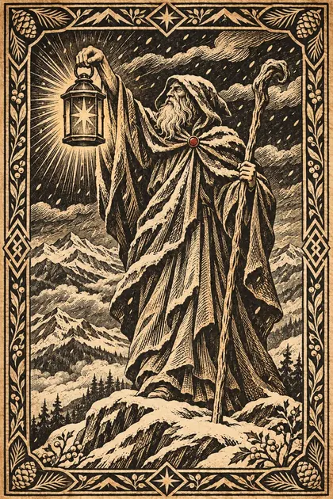
The Hermit
Solitude · Inner guidance · Reflection · Wisdom
The Hermit carries a lantern through the dark and walks alone by choice. Readers see it as a period for withdrawal and thought, a time to consult your own judgement. It values quiet, not isolation, and suggests answers come once you slow down.
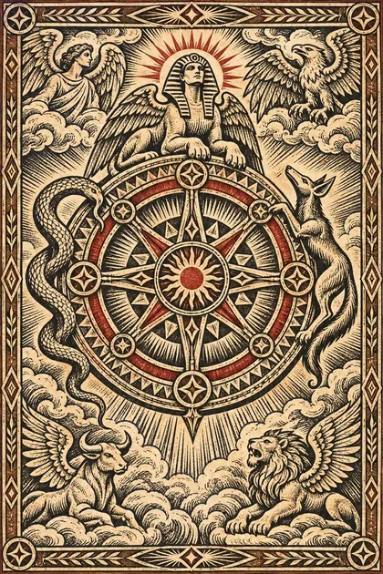
Wheel of Fortune
Cycles and change · Turning point · Fortune · Fate and timing
The Wheel turns, and so do circumstances. Readers take this card as a sign of a cycle shifting, sometimes in your favour and sometimes not. It encourages adaptability, and reminds you to focus on the decisions that remain yours to make.
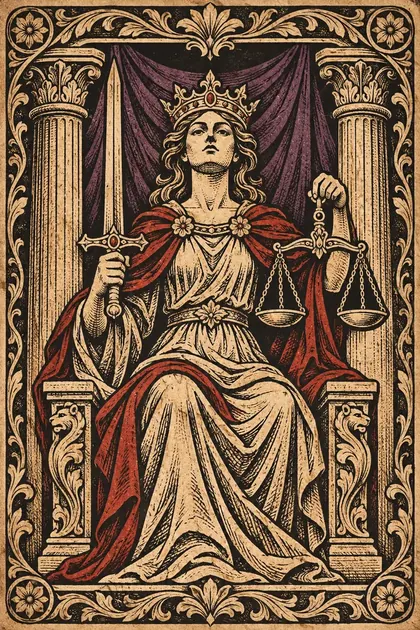
Justice
Fairness and balance · Accountability · Clear-eyed truth · Cause and effect
Justice appears when fairness and honesty are in play. It invites you to look at the facts without favouritism and to accept what your earlier choices have produced. Readers often connect it to contracts, commitments or any matter that needs straight, balanced thinking.
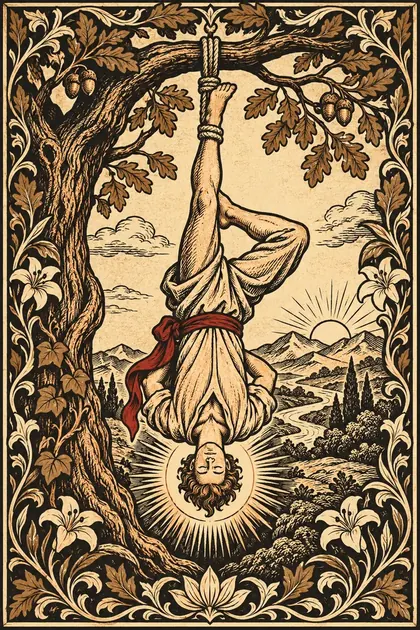
The Hanged Man
Pause and surrender · New perspective · Letting go of control · Voluntary sacrifice
A suspended figure who looks surprisingly at ease. The Hanged Man usually means a pause that is worth accepting, because forcing action would achieve nothing. Readers link it to surrender and fresh perspective, the point where a different viewpoint solves what effort could not.
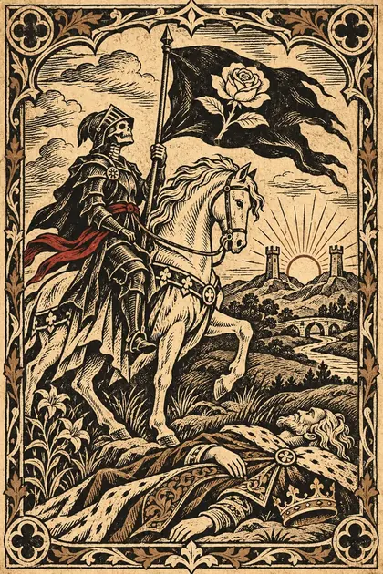
Death
Endings and transformation · Letting go · Clearing the old · Necessary change
New readers sometimes fear this card, but it almost never predicts literal death. Death points to a phase ending, a habit or role you have outgrown. Readers describe it as clearing the way, painful perhaps, yet necessary for what comes next.
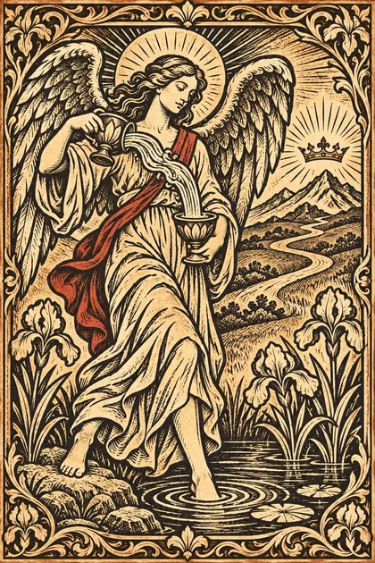
Temperance
Balance and moderation · Patience · Blending opposites · Healing and harmony
Temperance mixes two streams into one smooth flow. Readers read it as moderation, healing and steady progress through patient adjustment. When this card sits in your spread, it generally favours a measured approach, avoiding extremes and letting different parts of life settle into balance.
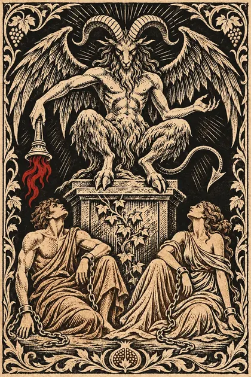
The Devil
Attachment and bondage · Temptation · Unhealthy patterns · Shadow side
The Devil depicts figures bound by chains that are loose enough to remove. Readers interpret it as attachment to something unhealthy, such as a habit, a fear or a dynamic. The consoling detail is that recognising the hold is usually the first step toward loosening it.
A dramatic card, The Tower shows a structure struck and shaken apart. Readers connect it with sudden change, shocking revelations or false foundations giving way. It is uncomfortable, though many see it as clearing ground so something more honest can be built afterwards.
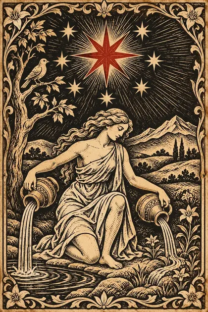
The Star
Hope and renewal · Healing · Inspiration · Serenity
After the shock of the previous card comes The Star, a gentle sign of hope. Readers associate it with healing, inspiration and calm. It does not promise instant answers, only the reassurance that recovery is possible and that rest is part of it.
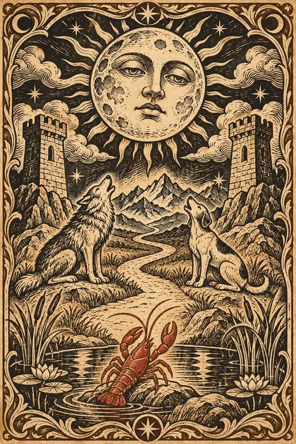
The Moon
Illusion and uncertainty · Intuition · Subconscious fears · Dreams
The Moon rules over half-lit paths, dreams and unease. Readers say it signals confusion or uncertainty, when intuition and anxiety are hard to tell apart. The standard advice is to proceed carefully, check facts, and wait for clearer light before committing.
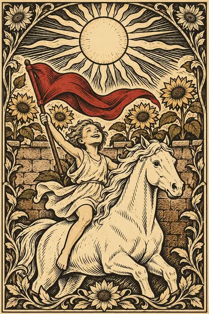
The Sun
Joy and vitality · Clarity and success · Warmth · Confidence
Cheerful and uncomplicated, The Sun is among the friendliest cards. Readers treat it as a sign of clarity, vitality and well-earned confidence. It suggests things are coming into the open, and that allowing yourself to enjoy the moment is entirely appropriate.
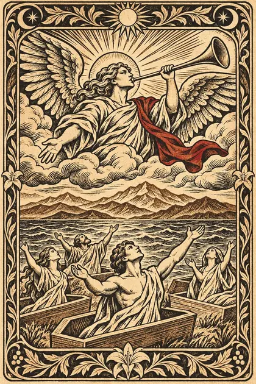
Judgement
Awakening and calling · Reckoning · Renewal · Self-forgiveness
Judgement works like a wake-up call. Readers interpret it as a moment of honest self-review, forgiveness and answering a deeper sense of purpose. It is less about blame than renewal, an invitation to leave old patterns behind and begin again.
The final trump brings the story full circle. Readers see The World as completion, integration and a sense that effort has paid off. It invites you to celebrate what you have finished, while recognising that endings also open the door to something larger.
Free tarot reading FAQ
Is this reading connected to any review or rating?
No. It is a separate, standalone tool for trying a tarot spread. Nothing you choose affects any listing, score or recommendation on the site. It simply lets you see what a cards-based reading feels like before you read what others say about readers. Our reader reviews live on separate pages, written and rated independently of this spread, so trying the cards has no bearing on what you see when you browse them.
Will my question be recorded anywhere?
It will not. The question box is processed within your own browser and only reappears in your own result. We do not collect it, and when you reload the page it disappears, which leaves no copy of your wording behind on our side. Seeing the cards for yourself can make reviews of readers more meaningful, because you will recognise the terms people use when describing what they were told.
How seriously should I take the result?
Take it as a prompt for thinking, nothing more. Tarot images are open to interpretation, and the useful part is how you connect them to your own circumstances. The reading is offered for entertainment and personal reflection, not as advice or prediction. That simple design choice means you can treat the page like a scratch pad, typing and discarding questions freely without worrying about leaving anything behind.
Why does the spread include six positions?
Six slots cover enough ground to feel like a complete story without becoming overwhelming. They look at how you see yourself, what you want, what you fear, what helps, what blocks you and where things are heading, which suits a two-minute session. If you prefer a fuller picture, the longer card meanings behind each position add context, so you are not relying on one short sentence for the whole story.
Ready for answers that fit your life?
The cards give you a thoughtful starting point. A live psychic can look at the full picture and talk through the details with you.